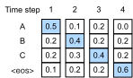
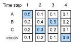

10.8. 束搜索¶
在 10.7节 中， 我们介绍了编码器-解码器架构， 以及端到端训练它们的标准技术。然而，在测试时预测方面， 我们只提到了贪心（greedy）策略， 即我们在每个时间步选取 预测为下一个出现的概率最高的词元， 直到在某个时间步，我们发现 已经预测出了特殊的序列结束词元“<eos>”。 本节中，我们将首先 形式化这一贪心搜索（greedy search）策略， 并指出从业者往往遇到的一些问题。 随后，我们将把这一策略与 两种替代方案进行比较： 穷举搜索（exhaustive search，有说明意义但不实用） 和束搜索（beam search，实践中的标准方法）。
我们首先沿用 10.7节 中的约定， 建立数学记号。 在任意时间步\(t'\)，解码器输出的 预测表示词表中每个词元 在序列中接下来出现的概率 （即\(y_{t'+1}\)的可能取值）， 条件为之前的词元 \(y_1, \ldots, y_{t'}\)以及 编码器为表示输入序列而产生的 上下文变量\(\mathbf{c}\)。 为了量化计算成本， 用\(\mathcal{Y}\)表示 输出词表 （包括特殊的序列结束词元“<eos>”）。 我们还将输出序列的最大词元数 记为\(T'\)。 我们的目标是从所有 \(\mathcal{O}(\left|\mathcal{Y}\right|^{T'})\) 个可能的输出序列中搜索出理想的输出。 请注意，这略微高估了 不同输出的数量， 因为一旦出现“<eos>”词元， 就不会再有后续词元。 不过，就我们的目的而言， 这个数量大致刻画了 搜索空间的大小。
10.8.1. 贪心搜索¶
考虑 10.7节 中简单的贪心搜索策略。 在这里，在任意时间步\(t'\)， 我们只需从\(\mathcal{Y}\)中 选取条件概率最高的词元，即
一旦我们的模型输出“<eos>” （或者我们达到最大长度\(T'\)）， 输出序列就完成了。
这一策略看起来或许合理， 而且事实上它并不算太差！ 考虑到它的计算需求如此之低， 你很难找到性价比更高的方法。 然而，如果我们暂时撇开效率不谈， 搜索最可能的序列而非 （贪心选取的）最可能词元组成的序列， 似乎更为合理。 事实证明，这两者可能差别很大。 最可能的序列是使表达式 \(\prod_{t'=1}^{T'} P(y_{t'} \mid y_1, \ldots, y_{t'-1}, \mathbf{c})\)最大化的序列。 在我们的机器翻译例子中， 如果解码器确实还原了 底层生成过程的概率， 那么它就会给出最可能的翻译。 不幸的是，并不能保证 贪心搜索会给出这个序列。
让我们用一个例子来说明。 假设输出词表中有四个词元 “A”“B”“C”和“<eos>”。 在 图10.8.1 中， 每个时间步下方的四个数字分别表示 在该时间步生成“A”“B”“C” 和“<eos>”的条件概率。

图10.8.1 在每个时间步，贪心搜索选取条件概率最高的词元。¶
在每个时间步，贪心搜索都选取 条件概率最高的词元。 因此，将会预测出输出序列“A”“B”“C”和“<eos>” （图10.8.1）。 该输出序列的条件概率 为\(0.5\times0.4\times0.4\times0.6 = 0.048\)。
接下来，让我们看 图10.8.2 中的另一个例子。 与 图10.8.1 不同， 在时间步 2，我们选取词元“C”， 它具有第二高的条件概率。

图10.8.2 每个时间步下方的四个数字表示 在该时间步生成“A”“B”“C”和“<eos>”的条件概率。 在时间步 2，选取的是 具有第二高条件概率的词元“C”。¶
由于时间步 3 所依据的 时间步 1 和 2 的输出子序列， 已从 图10.8.1 中的“A”和“B” 变为 图10.8.2 中的“A”和“C”， 所以 图10.8.2 中时间步 3 的 每个词元条件概率也随之改变。 假设我们在时间步 3 选择词元“B”。 现在时间步 4 以 最初三个时间步的输出子序列 “A”“C”和“B”为条件， 而该子序列已不同于 图10.8.1 中的“A”“B”和“C”。 因此，图10.8.2 中时间步 4 生成 每个词元的条件概率 也不同于 图10.8.1 中的相应概率。 于是，图10.8.2 中输出序列 “A”“C”“B”和“<eos>”的条件概率 为\(0.5\times0.3 \times0.6\times0.6=0.054\)， 大于 图10.8.1 中贪心搜索的条件概率。 在这个例子中，贪心搜索得到的 输出序列“A”“B”“C”和“<eos>”并非最优。
10.8.2. 穷举搜索¶
如果目标是得到最可能的序列， 我们可以考虑使用穷举搜索（exhaustive search）： 枚举所有可能的输出序列 及其条件概率， 然后输出预测概率 得分最高的那一个。
虽然这确实能给我们想要的结果， 但其计算成本高得令人却步： \(\mathcal{O}(\left|\mathcal{Y}\right|^{T'})\)， 它相对于序列长度呈指数增长， 而底数由词表大小给出，极为庞大。 例如，当\(|\mathcal{Y}|=10000\)且\(T'=10\)时 （与真实应用中的数值相比，这两个数都很小）， 我们需要评估\(10000^{10} = 10^{40}\)个序列， 这已经超出了任何可预见的计算机的能力。 另一方面，贪心搜索的计算成本是 \(\mathcal{O}(\left|\mathcal{Y}\right|T')\)： 便宜得不可思议，但远非最优。 例如，当\(|\mathcal{Y}|=10000\)且\(T'=10\)时， 我们只需评估\(10000\times10=10^5\)个序列。
10.8.3. 束搜索¶
你可以把序列解码策略看作处于一个谱系上， 其中束搜索在贪心搜索的效率 与穷举搜索的最优性之间取得折中。 束搜索最直接的版本 由一个超参数刻画， 即束宽（beam size）\(k\)。 让我们解释一下这一术语。 在时间步 1，我们选取 预测概率最高的\(k\)个词元。 它们分别将成为 \(k\)个候选输出序列的第一个词元。 在后续的每个时间步， 基于上一时间步的\(k\)个候选输出序列， 我们继续挑选\(k\)个预测概率最高的候选输出序列， 它们取自\(k\left|\mathcal{Y}\right|\)个可能选择。

图10.8.3 束搜索的过程（束宽\(=2\)；输出序列的最大长度\(=3\)）。候选输出序列为\(\mathit{A}\)、\(\mathit{C}\)、\(\mathit{AB}\)、\(\mathit{CE}\)、\(\mathit{ABD}\)和\(\mathit{CED}\)。¶
图10.8.3 用一个例子 演示了束搜索的过程。 假设输出词表 只包含五个元素： \(\mathcal{Y} = \{A, B, C, D, E\}\)， 其中一个是“<eos>”。 令束宽为 2， 输出序列的最大长度为 3。 在时间步 1， 假设条件概率 \(P(y_1 \mid \mathbf{c})\)最高的词元 是\(A\)和\(C\)。 在时间步 2，对所有\(y_2 \in \mathcal{Y},\) 我们计算
并在这十个值中挑出最大的两个，比如 \(P(A, B \mid \mathbf{c})\)和\(P(C, E \mid \mathbf{c})\)。 然后在时间步 3，对所有\(y_3 \in \mathcal{Y}\)，我们计算
并在这十个值中挑出最大的两个，比如 \(P(A, B, D \mid \mathbf{c})\) 和 \(P(C, E, D \mid \mathbf{c}).\) 于是，我们得到六个候选输出序列：(i) \(A\)；(ii) \(C\)；(iii) \(A\)、\(B\)；(iv) \(C\)、\(E\)；(v) \(A\)、\(B\)、\(D\)；(vi) \(C\)、\(E\)、\(D\)。
最后，我们基于这六个序列（例如，丢弃包含“<eos>”及其之后的部分） 得到最终候选输出序列的集合。 然后我们选择使以下得分最大化的输出序列：
这里\(L\)是最终候选序列的长度， \(\alpha\)通常设为 0.75。 由于较长的序列在 (10.8.4) 的求和中包含更多的对数项， 分母中的\(L^\alpha\)项 会对长序列加以惩罚。
束搜索的计算成本是\(\mathcal{O}(k\left|\mathcal{Y}\right|T')\)。 这一结果介于贪心搜索和穷举搜索的计算成本之间。 贪心搜索可以视为束宽设为 1 时束搜索的一个特例。
10.8.4. 小结¶
序列搜索策略包括 贪心搜索、穷举搜索和束搜索。 束搜索通过灵活选择束宽， 在准确率与 计算成本之间提供了一种折中。